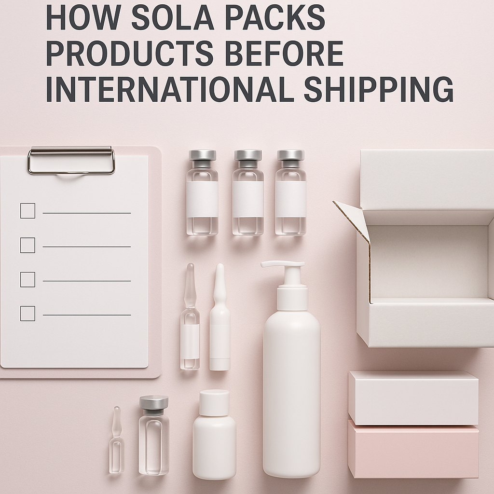
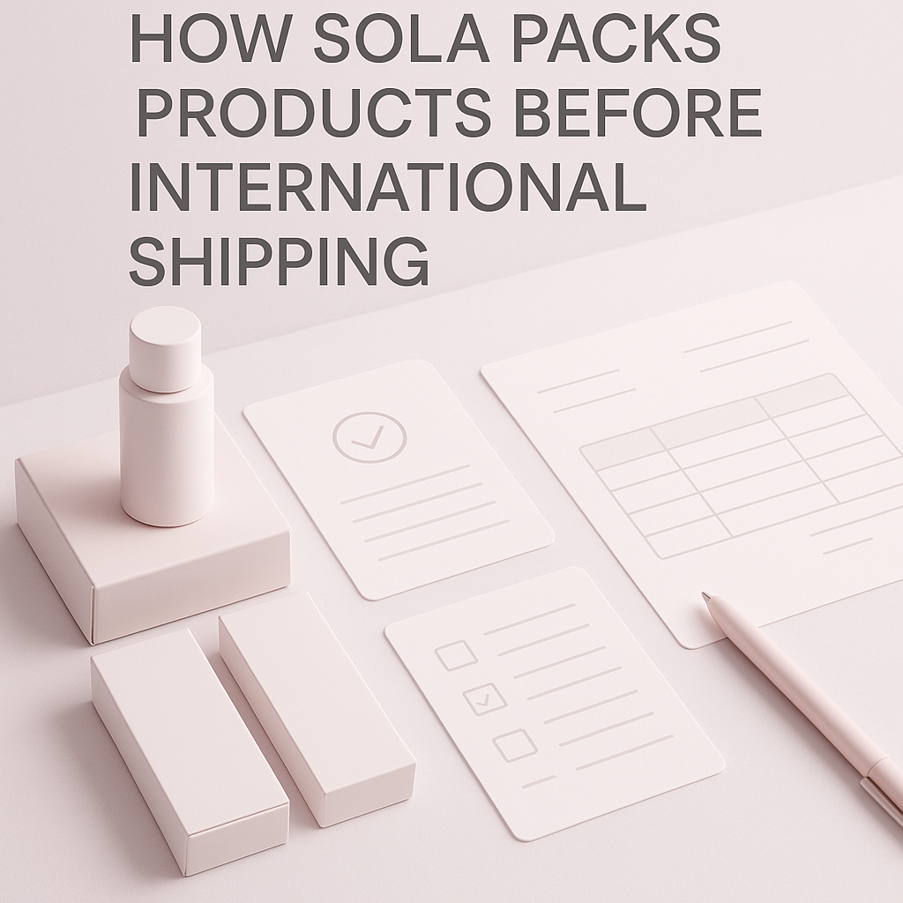
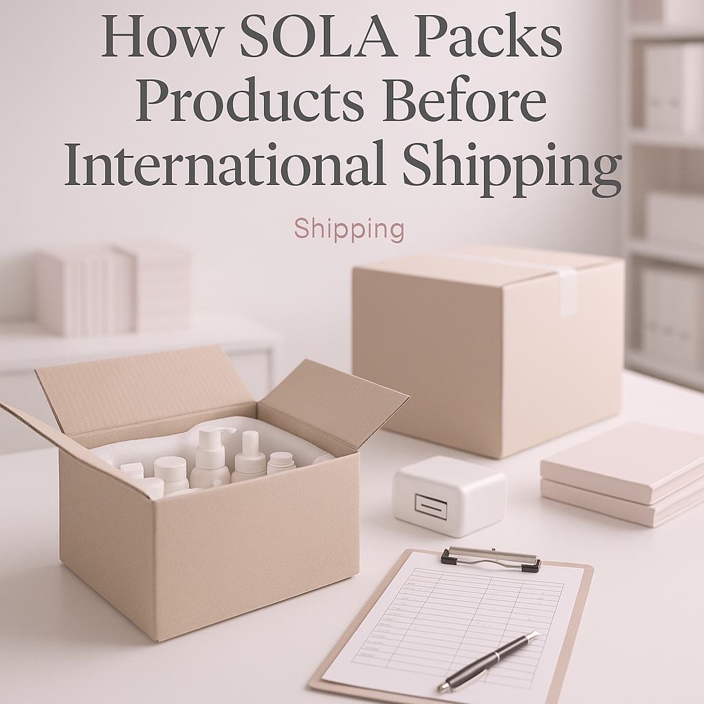

Discover SOLA's efficient packing process for international shipping. This guide helps professional buyers understand logistics, documentation, and order planning.
When sourcing medical supplies for international distribution, professional buyers face a significant challenge: ensuring that products arrive safely and in compliance with local regulations. The packing process is crucial, as inadequate packaging can lead to damage, delays, and compliance issues. Understanding how SOLA packs products before international shipping helps buyers mitigate these risks and ensures a smooth procurement process.
This article will provide essential insights into SOLA's packing methods, key considerations for international shipping, and practical advice for professional buyers. By grasping these concepts, clinics, spas, resellers, and distributors can make informed decisions when sourcing their medical supplies.
Key Takeaways
- Understanding SOLA's packing methods can enhance your shipping strategy and reduce risks.
- Proper documentation is essential for compliance and smooth customs clearance.
- Evaluate packaging options based on product type and destination requirements.
- Establish clear communication with suppliers to address any shipping concerns.
- Plan your orders effectively, considering minimum order quantities (MOQ) and reordering timelines.
What this guide covers
- Understanding the packing process
- Key considerations for international shipping
- Buyer scenarios and order planning
- Comparison criteria for sourcing
- Checklist before requesting a quote
- Logistics questions and documentation needs
- MOQ, quotations, and reorder planning
What buyers should understand first

Before diving into the specifics of how SOLA packs products before international shipping, it's important for buyers to understand the nature of the products they are sourcing. Medical supplies can range from consumables like syringes and gloves to equipment such as diagnostic tools or surgical instruments. Each category has unique packaging requirements to ensure product integrity and compliance with international shipping regulations.
For instance, consumables often need protective packaging to prevent contamination, while equipment may require sturdy cases to avoid damage during transit. Understanding these differences is key to selecting the right products and ensuring they are packed appropriately for international shipping.
Which buyers is this most relevant for?
This guide is particularly relevant for clinics, spas, resellers, and distributors involved in sourcing medical supplies. Each of these buyer types has distinct needs when it comes to order planning and logistics. For clinics, timely delivery of medical supplies is critical to maintaining patient care. Spas may require specific products that adhere to regulatory standards, while resellers and distributors must manage inventory levels and supplier relationships effectively.
Professional buyers in these fields should evaluate their order planning needs based on factors such as product demand, lead times, and compliance requirements. This understanding will inform their sourcing strategies and help them work effectively with suppliers like SOLA.
How to compare options before ordering
When sourcing medical supplies, buyers should consider several key criteria to compare options effectively:
- Product Type: Ensure the products meet your specific needs and comply with local regulations.
- Brand Reputation: Research the supplier's history and customer reviews to gauge reliability.
- Packaging Quality: Assess whether the packaging protects the products during shipping and storage.
- Batch and Expiry Visibility: Ensure that products have clear labeling for batch numbers and expiry dates.
- Supplier Communication: Evaluate how responsive the supplier is to inquiries and issues.
- Destination Requirements: Understand any specific packing or documentation needs based on the destination country.
Buyer checklist before requesting a quote


- Define your product requirements clearly.
- Determine the quantities needed, considering MOQ.
- Identify any specific packaging or labeling requirements.
- Prepare documentation needs for customs clearance.
- Review supplier communication history for responsiveness.
- Plan reorder timelines based on inventory levels.
- Confirm shipping destination and any unique requirements.
Shipping, packing and documentation questions
Buyers often have several logistics-related questions when it comes to shipping and packing. Here are some common queries:
- What are the typical shipping methods available? Buyers can choose from air freight, sea freight, or courier services based on urgency and budget.
- What documentation is required for international shipping? Essential documents include commercial invoices, packing lists, and any necessary export licenses.
- How can buyers ensure compliance with local regulations? It's crucial to research the destination country's import regulations and work with suppliers who understand these requirements.
- What should buyers do if products are damaged during shipping? Establish a clear communication protocol with your supplier for reporting and resolving issues.
MOQ, quotation and reorder planning
Understanding minimum order quantities (MOQ) and how to prepare for reordering is vital for efficient inventory management. Buyers should consider the following:
- Assess your current inventory levels and demand forecasts to determine the appropriate quantities to order.
- Discuss with suppliers like SOLA to confirm current availability and pricing for wholesale quotations.
- Identify any product variants needed for specific markets or customer preferences.
- Plan reorder schedules based on lead times and sales cycles to avoid stockouts.
FAQ
What is the typical lead time for international shipping?
Lead times can vary based on shipping method and destination, but generally, air freight is faster than sea freight.
How can I ensure my products are compliant with local regulations?
Research the import regulations of the destination country and consult with your supplier for guidance.
What should I do if my order is delayed?
Contact your supplier immediately to get updates on the status of your shipment and potential solutions.
Can I request custom packaging for my orders?
Many suppliers, including SOLA, can accommodate requests for custom packaging based on your needs.
How do I handle damaged goods upon arrival?
Document the damage with photos and contact your supplier to discuss the next steps for resolution.
Contact SOLA for wholesale quotation via WhatsApp.
Planning a wholesale request?
Send product names, quantities and destination for a tailored discussion.
Contact SOLA on WhatsApp →General educational content for professional buyers. Not medical, legal, regulatory or import advice.